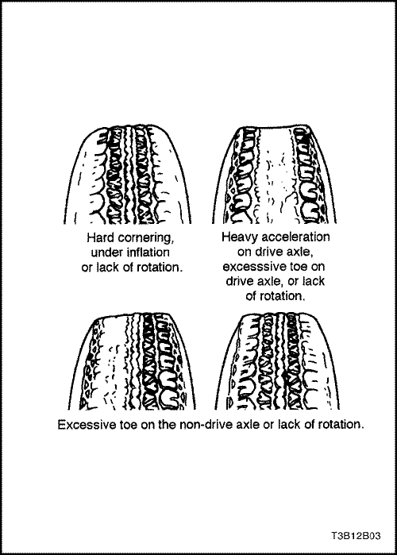
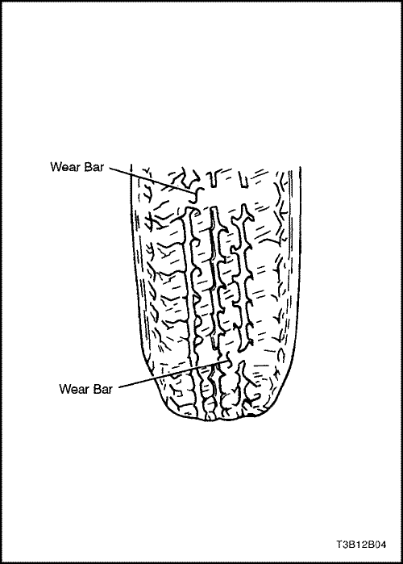
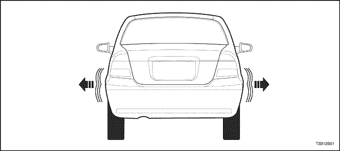
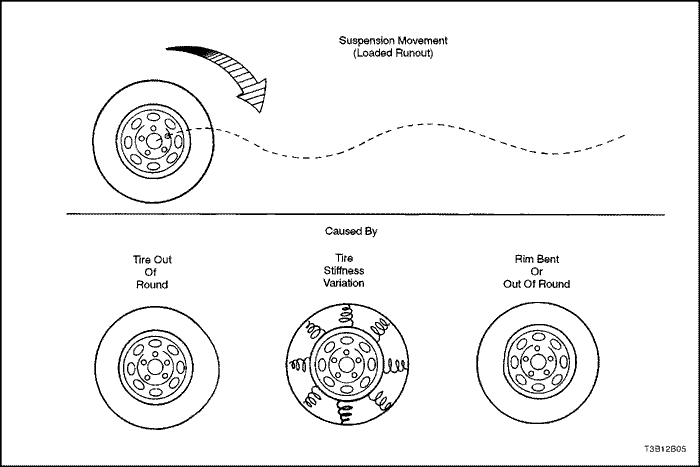
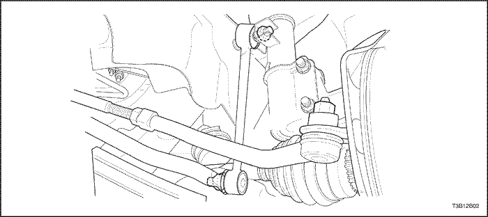

SECCIÓN 2B
CALIBRADO DE LAS RUEDAS
ESPECIFICACIONES
Especificaciones para el calibrado (alineación) de las ruedas
| Aplicación | Delante | Detrás |
| Inclinación ( °) | -24´ ± 45´ | -1°30´ ± 30´ |
| Avance - Manual | - | - |
| Avance - Dirección asistida (°) | 2°30´ ± 45´ | - |
| Divergencia (carga de 2 personas) ( °) | 2´±10´ | 15´ ± 20´ |
Nota: Las especificaciones de alineación anteriores son con el vehículo en condiciones de carga normales. Antes de inspeccionar o alinear, ponga un peso de aproximadamente 68 Kg (150 lbs.) en cada cojín de asiento delantero.
Diferencia entre izquierda y derecha
| Aplicación | Delante | Detrás |
| Inclinación | 1°máx. | 30' máx. |
| Cáster | 1°máx. | - |
| Divergencia | - | 15' máx. |
Especificaciones para el apriete del afianzador
| Aplicación | N•m | Lb-pies | Lb-pulg. |
| Tuerca de ajuste de divergencia delantero | 22 | 16 | - |
DIAGNÓSTICO
Diagnóstico de neumáticos
Desgaste irregular y prematuro
Las causas de un desgaste irregular y prematuro de los neumáticos pueden ser muchas. El motivo de algunas de ellas son presiones de inflado incorrectas, falta de rotación regular, conductor desacostumbrado, o calibrado incorrecto de las ruedas. Si se reajusta el calibrado de las ruedas a causa de desgaste de los neumáticos, reponer el paralelismo tan cerca de cero grados según lo permita la especificación. Ver
"Comprobación del ángulo de divergencia trasero" en esta sección.
Girar los neumáticos si:
- El desgaste del neumático delantero es diferente del trasero.
- El desgaste de los neumáticos delanteros izquierdo y derecho es desigual.
- El desgaste de los neumáticos traseros izquierdo y derecho es desigual.
Controlar el calibrado (paralelismo) de las ruedas si:
- El desgaste de los neumáticos delanteros izquierdo y derecho es desigual.
- El desgaste es desigual por la banda de rodadura de alguno de los neumáticos delanteros.
- Las bandas de rodadura de los neumáticos delanteros están erosionados con bordes tipo "pluma" en el lado de los dibujos o tacos de la banda de rodadura.



Indicadores de desgaste de banda de rodadura
Los neumáticos incluidos en el equipo original llevan incorporados indicadores de desgaste de banda de rodadura para mostrar cuándo es necesario cambiarlos. Estos indicadores aparecen como franjas cuando la profundidad de la banda de rodadura del neumático empieza a adelgazarse. Se recomienda cambiar los neumáticos cuando los indicadores aparezcan en tres o más surcos en seis lugares.

Balanceo de neumático radial
El balanceo es el movimiento de lado a lado en la parte delantera o trasera del vehículo. Se debe a que la banda de acero no es recta en el neumático, o a un descentramiento lateral excesivo del neumático o rueda. Es más patente a velocidades bajas, de 8 a 48 km/h (5 a 30 mph), pero puede presentarse como marcha irregular entre 80 y 113 km/h (50 a 70 mph).
El vehículo debe probarse en carretera para determinar en cuál de sus extremos se halla el neumático defectuoso. El extremo trasero del vehículo dará sacudidas de un lado a otro o se balanceará si el neumático defectuoso está detrás. Desde el asiento del conductor parece como si alguien empuja el vehículo lateralmente. Si el neumático defectuoso es delantero, el balanceo es más visual. Parece que la chapa delantera se mueva en vaivén, y el asiento del conductor sea el punto pivotante del vehículo.
El balanceo puede diagnosticarse usando el método de sustituir por conjuntos de neumático y rueda satisfactorios en el vehículo problemático.
- Probar el vehículo en carretera para determinar si el balanceo proviene de delante o detrás.
- En el extremo problemático del vehículo montar neumáticos y ruedas satisfactorios procedentes de otro vehículo similar. Si el origen del balanceo no es patente, cambiar los neumáticos traseros.
- Probar el vehículo en carretera. Si se observa una mejora, montar los neumáticos originales para descubrir el neumático defectuoso. Si no hubiera mejora, instalar neumáticos de buena calidad en lugar de los defectuosos.
- Instalar neumáticos originales, uno a la vez, para descubrir el neumático defectuoso.

"Lead"/"Pull" de neumático radial
"Lead"/"pull" es la desviación del vehículo de un trayecto recto sobre una carretera nivelada sin presión en el volante. Sus causas son normalmente:
- Alineación incorrecta.
- Ajuste de freno desigual.
- Construcción del neumático.
La forma cómo un neumático está construido puede producir "lead"/"pull" en el vehículo. Las bandas excéntricas en neumáticos radiales pueden provocar que el neumático desarrolle una fuerza lateral mientras el vehículo avanza recto por la carretera. Si un lado del neumático además tiene un diámetro algo superior al del otro lado, el neumático tiene tendencia a girar lateralmente. Diámetros desiguales causarán que el neumático desarrolle una fuerza lateral que puede producir "lead"/"pull" en el vehículo.
El diagrama del diagnóstico de "lead"/"pull" radial debe usarse para determinar si el origen es un problema de alineación o de los neumáticos. Parte del procedimiento de diagnóstico del "lead" exige una rotación del neumático diferente del modelo de rotación adecuado del neumático. Si un neumático con un kilometraje entre medio y alto se cambia al otro lado del vehículo, cerciorarse de controlar si hay irregularidad en la marcha. Los neumáticos traseros no causarán "lead"/"pull".
Diagrama de diagnóstico de avance/tiro de neumático radial
| Paso | Medida | Valor(es) | Sí | No |
| 1 | - Realizar una inspección preliminar del calibrado (alineación) de la rueda.
- Controlar si los frenos tienen roce.
- Probar el vehículo en carretera.
¿Tiene el vehículo avance/tiro ? | - | Ir al Paso 2 | Sistema conforme |
| 2 | - Intercambiar transversalmente los conjuntos de neumático y rueda delanteros.
- Probar el vehículo en carretera.
¿Tiene el vehículo avance/tiro ? | - | Ir al Paso 3 | Sistema conforme |
| 3 | - Controlar el calibrado de la rueda delantera.
¿Se mantiene el calibrado dentro de las especificaciones? | Consultar la página 2B-1 | Ir al Paso 4 | Ajustar calibrado |
| 4 | - Comparar la inclinación delantera y cáster (avance) delantero con las especificaciones.
¿Se mantienen dentro de los valores de las especificaciones? | Consultar la página 2B-1 | Ir al Paso 7 | Ir al Paso 5 |
| 5 | - Controlar el bastidor del vehículo.
¿Está deformado el bastidor? | - | Ir al Paso 6 | Ir al Paso 1 |
| 6 | - Enderezar el bastidor.
¿Está completa la reparación? | - | Ir al Paso 3 | - |
| 7 | - La causa probable son los neumáticos.
- Intercambiar el conjunto de neumático y rueda delantero izquierdo con el conjunto de neumático y rueda trasero izquierdo.
- Probar el vehículo en carretera.
¿Tiene el vehículo todavía avance/tiro? | -- | Ir al Paso 9 | Ir al Paso 8 |
| 8 | - Intercambiar el conjunto de neumático y rueda delantero izquierdo con el conjunto de neumático y rueda trasero izquierdo y cambiar el neumático izquierdo delantero.
¿Está completa la reparación? | - | Sistema conforme | Ir al Paso 1 |
| 9 | - Intercambiar el conjunto de neumático y rueda delantero derecho con el conjunto de neumático y rueda trasero derecho.
- Probar el vehículo en carretera.
¿Tiene el vehículo todavía avance/tiro? | - | Ir al Paso 1 | Ir al Paso 10 |
| 10 | - Intercambiar el conjunto de neumático y rueda delantero derecho con el conjunto de neumático y rueda trasero derecho y cambiar el neumático delantero derecho.
¿Está completa la reparación? | - | Sistema conforme | Ir al Paso 1 |
Diagnóstico de vibración
Las ruedas desequilibradas causan la mayor parte de los problemas de vibraciones por velocidad en las autopistas. Después de un equilibrado dinámico una vibración puede persistir debido a que:
- Un neumático está ovalado.
- Una llanta está ovalada.
- Existen variaciones en la rigidez de los neumáticos.
La medición del descentramiento libre del neumático y la rueda sólo revelará parte del problema. Las tres causas, conocidas como descentramiento radial cargado, deben controlarse usando el método de sustituir por conjuntos de neumático y rueda satisfactorios en el vehículo problemático.
Las vibraciones a baja velocidad, que se producen a menos de 64 km/h (40 mph), normalmente se deben a descentramiento. Las vibraciones a alta velocidad, que se producen a más de 64 km/h (40 mph), pueden provocarlas desequilibrio o descentramiento.
Controles preliminares
Antes de realizar cualquier tarea, probar el automóvil por carretera y realizar una inspección visual cuidadosa de:
- Descentramiento patente del neumático y rueda.
- Descentramiento patente del eje de tracción.
- Inflado inadecuado de los neumáticos.
- Altura de ajuste incorrecta.
- Ruedas deformadas o dañadas.
- Acumulación de residuos en el neumático o la rueda.
- Desgaste irregular o excesivo en el neumático.
- Asiento de talón inadecuado en la llanta.
- Imperfecciones en los neumáticos, entre ellas: deformaciones, separaciones o protuberancias por daños de impactos en la banda de rodadura. Es normal que haya ligeras indentaciones en los flancos y esto no afecta la calidad de la marcha.

Equilibrado de los neumáticos
El equilibrado es el procedimiento más fácil de realizar y deberá efectuarse si se produce vibración a velocidades altas. Efectuar primero un equilibrado dinámico de dos planos fuera del vehículo para corregir cualquier desequilibrio en el conjunto de neumático y rueda.
Un equilibrado final en el vehículo corregirá cualquier desequilibrio en el tambor o rotor de freno, o tapa de rueda. Si el equilibrado no corrige la vibración a alta velocidad, o si la vibración se produce a velocidades bajas, la causa probable es descentramiento.
Descentramiento
El descentramiento puede causarlo el neumático, la rueda o la forma cómo la rueda está fijada al vehículo. Para investigar la posibilidad de descentramiento de la rueda, ver los siguientes procedimientos, así como el diagrama de diagnóstico de descentramiento de rueda en esta sección:
- Si se sospecha descentramiento, medir el descentramiento lateral libre y radial libre del conjunto de neumático y rueda en el vehículo. Ver la Sección 2E, Neumáticos y ruedas. Tanto el descentramiento libre lateral como el radial deben ser menores a 1,5 mm (0,06 pulg.). Si cualquiera de los dos es mayor a este valor, proceda al Paso 2.
- Montar el neumático y la rueda en una máquina de equilibrado dinámico y volver a medir el descentramiento lateral libre y radial libre. Anotar el valor del descentramiento lateral y radial libres, y la posición de la cota más alta. Ver la Sección 2E, Neumáticos y ruedas. Si el descentramiento radial y lateral libres exceden de 1,3 mm (0,05 pulg.) en la banda de rodadura del neumático, pasar al Paso 4.
- Medir el descentramiento de la rueda. Ver la Sección 2E, Neumáticos y ruedas. Si la rueda excede de las especificaciones, cambiarla.
- Desinflar el neumático y adaptar el punto de descentramiento radial alto del neumático al punto de descentramiento radial bajo de la rueda. Volver a inflar el neumático y montarlo en la máquina de equilibrado dinámico. Medir y anotar el descentramiento radial y lateral libre y sus posiciones. En muchos casos, montando y adaptando el neumático en la rueda comportará que el descentramiento del conjunto de neumático y rueda quede dentro de una gama aceptable de 1,3 mm (0,05 pulg.) o menor.
- Si el descentramiento libre del conjunto de neumático y rueda es 1,3 mm (0,05 pulg.) o inferior al medirse fuera del vehículo, pero excede de 1,3 mm (0,05 pulg.) al medirse en el vehículo, la causa probable de las vibraciones es la fijación del conjunto de neumático y rueda en el buje. Hacer girar dos espárragos de rueda del conjunto y volver a controlar el descentramiento. Ver la Sección 2E, Neumáticos y ruedas. Puede suceder que se tengan que probar varias posiciones para encontrar la mejor posición para los espárragos.
- Si el descentramiento libre del conjunto de neumático y rueda no puede reducirse a 1,3 mm (0,05 pulg.) o menos, quitar el conjunto.
- Medir el descentramiento de espárrago de rueda usando un indicador de cuadrante con base magnética.
- Poner a cero el botón de ajuste del indicador de cuadrante en un espárrago.
- Separar suavemente el botón de ajuste del espárrago. Hacer girar la brida para situar el siguiente espárrago contra el indicador de cuadrante.
- Anotar el descentramiento de todos los espárragos. La lectura del indicador de cuadrante deberá ser cero cuando se vuelva a poner sobre el primer espárrago controlado.
- Si el descentramiento excede de 0,76 mm (0,03 pulg.) deberá cambiarse el buje o el conjunto de buje y cojinete.
Siempre que se gire un neumático en la rueda, o siempre que se cambie un neumático o rueda, reequilibrar el conjunto.
Diagrama de diagnóstico de descentramiento de rueda
| Paso | Medida | Valor(es) | Sí | No |
| 1 | Probar el vehículo en carretera para verificar la reclamación de vibraciones. ¿Se han comprobado las preocupaciones del cliente? | - | Ir al Paso 2 | Sistema conforme |
| 2 | - Realizar un control preliminar del diagnóstico de vibración.
- Reparar todo problema encontrado.
¿Sigue habiendo vibración? | - | Ir al Paso 3 | Sistema conforme |
| 3 | Determinar a qué velocidad se presenta la vibración. ¿Es la vibración a más de 64 km/h (40 mph)? | - | Ir al Paso 4 | Ir al Paso 6 |
| 4 | Realizar un equilibrado de rueda dinámico fuera del vehículo. ¿Sigue habiendo vibración? | - | Ir al Paso 5 | Sistema conforme |
| 5 | Realizar un equilibrado final en el vehículo. ¿Sigue habiendo vibración? | - | Ir al Paso 6 | Sistema conforme |
| 6 | Realizar una comprobación de descentramiento libre lateral y radial en el vehículo. ¿Coincide el descentramiento con el valor especificado? | 1,5 mm (0,06 pulg.) | Ir al Paso 4 | Ir al Paso 7 |
| 7 | Realizar un control del descentramiento lateral y radial libre fuera del vehículo. ¿Coincide el descentramiento con el valor especificado? | 1,3 mm (0,05 pulg.) | Ir al Paso 8 | Ir al Paso 12 |
| 8 | - Graduar el conjunto de neumático y rueda en los prisioneros del buje.
- Obtener el menor descentramiento posible.
¿Coincide el descentramiento con el valor especificado? | 0,76 mm (0,03 pulg.) | Ir al Paso 9 | Ir al Paso 14 |
| 9 | Realizar un equilibrado de rueda dinámico fuera del vehículo. ¿Sigue habiendo vibración? | - | Ir al Paso 10 | Sistema conforme |
| 10 | Realizar un equilibrado final en el vehículo. ¿Sigue habiendo vibración? | - | Ir al Paso 11 | Sistema conforme |
| 11 | - Controlar si hay algún desequilibrio en la transmisión del motor.
- Inspeccionar escrupulosamente los ejes de tracción y las juntas de velocidad constante.
- Reparar todo problema observado.
¿Se han completado las reparaciones? | - | Ir al Paso 1 | - |
| 12 | - Montar y adaptar el neumático en la rueda.
- Realizar un control del descentramiento lateral y radial libre fuera del vehículo.
¿Coincide el descentramiento con el valor especificado? | 1,5 mm (0,06 pulg.) | Ir al Paso 9 | Ir al Paso 13 |
| 13 | - Desmontar el neumático de la rueda de la que se tengan sospechas.
- Medir el descentramiento de la rueda.
¿Coincide el descentramiento con el valor especificado? | 0,8 mm (0,03 pulg.) | Ir al Paso 15 | Ir al Paso 16 |
| 14 | Medir el descentramiento de la brida del buje. ¿Coincide el descentramiento con el valor especificado? | 0,76 mm (0,03 pulg.) | Ir al Paso 9 | Ir al Paso 17 |
| 15 | Cambiar el neumático. ¿Está completa la reparación? | - | Ir al Paso 1 | - |
| 16 | Cambiar la rueda. ¿Está completa la reparación? | - | Ir al Paso 1 | - |
| 17 | Cambiar el buje. ¿Está completa la reparación? | - | Ir al Paso 1 | - |
Inspección preliminar
| Controles | Medida a adoptar |
| Controlar si los neumáticos están adecuadamente inflados y si el desgaste de la banda de rodadura es normal. | Inflarlos a la presión de neumático adecuada. Cambiar los neumáticos si fuera necesario. |
| Controlar si los cojinetes de rueda están flojos. | Apretar la tuerca de eje de acuerdo con la especificación adecuada. Cambiar el cojinete de rueda de montante si fuera necesario. |
| Controlar si hay juntas de rótula y extremos de barra de tracción flojos. | Apretar las juntas de rótula y las barras de tracción. |
| Controlar el descentramiento de las ruedas y neumáticos. | Medir y corregir el descentramiento de los neumáticos. |
| Controlar las alturas de ajuste del vehículo. | Corregir las alturas de ajuste. Efectuar la corrección antes de ajustar el paralelismo. |
| Controlar si la fijación de cremallera y piñón está floja. | Apretar los soportes de fijación del conjunto de cremallera y piñón. |
| Controlar si hay montantes que funcionen anormalmente. | Cambiar el conjunto de montante. |
| Controlar si hay brazos de control flojos. | Apretar los pernos de fijación del brazo de control. Cambiar los bujes del brazo de control, si fuera necesario. |
Ajuste del paralelismo delantero
- Aflojar los pernos de bloqueo de la varilla derecha e izquierda.
- Gire a la derecha e izquierda los ajustadores del tirante de tracción para alinear la divergencia a 2 minutos - 10 a +10 minutes.
En este ajuste, las barras de acoplamiento izquierda y derecha deben tener la misma longitud.
Apretar
Apretar los pernos de bloqueo de la barra de acoplamiento a 64 N•m (47 lb-pie).

Control de inclinación y cáster (avance) delanteros
La inclinación y cáster (avance) delanteros no son ajustables. Ver
"Especificaciones para el calibrado de las ruedas" en esta sección. Hacer botar el parachoques tres veces antes de medir la inclinación o el cáster, a fin de evitar una lectura incorrecta. Si las mediciones de la inclinación o cáster delanteros se apartan de las especificaciones, localizar y cambiar o reparar toda pieza de la suspensión dañada, floja, deformada, abollada o desgastada. Si el problema tiene que ver con la carrocería, reparar la carrocería.
Control de inclinación trasera
La inclinación trasera no puede ajustarse. Ver
"Especificaciones para el calibrado de las ruedas" en esta sección. Si el ángulo de caída trasero está fuera de las especificaciones, localizar la causa y corregirla. Si se encuentran piezas de la suspensión dañadas, flojas, deformadas, abolladas o desgastas, deberán repararse o cambiarse. Si el problema tiene que ver con la carrocería, reparar la carrocería.
Comprobación del ángulo de divergencia trasero
El ángulo de divergencia trasero no es ajustable. Ver
"Especificaciones para el calibrado de las ruedas" en esta sección. Si la divergencia se desvía de la especificación, comprobar el conjunto de cojinete trasero y el muñón de rueda en los vehículos sin sistema de frenado antibloqueo (ABS) o el conjunto de eje trasero y buje y el conjunto de cojinete en los vehículos con ABS para ver si están dañados
DESCRIPCIÓN GENERAL Y FUNCIONAMIENTO DEL SISTEMA
Calibrado de las cuatro ruedas
La principal responsabilidad de la ingeniería es la de diseñar sistemas seguros de dirección y suspensión. Cada componente debe ser lo suficientemente fuerte como para resistir un trato muy rudo. Tanto el sistema de dirección como la suspensión delantera y trasera deben funcionar geométricamente con la masa de la carrocería.
Los sistemas de dirección y suspensión requieren que las ruedas delanteras regresen por sí solas a la posición recta y que el esfuerzo de rodamiento y la fricción con el piso sean de fuerza despreciable, para que el conductor pueda dirigir el vehículo con el mínimo de esfuerzo y la mayor comodidad.
La comprobación completa de la alineación de las ruedas debe incluir mediciones del ángulo de divergencia y del ángulo de caída traseros.
La alineación de las cuatro ruedas asegura que todas ellas rueden exactamente en la misma dirección.
Cuando el vehículo está alineado geométricamente, el consumo de combustible y la duración de los neumáticos alcanzan su mejor pico y se mejora la conducción y el rendimiento.
Paralelismo
La divergencia es la desviación de los neumáticos hacia el interior y la convergencia es la desviación de los mismos hacia el exterior de la línea del centro geométrico del vehículo, también llamada línea de empuje. El paralelismo asegura que las ruedas giren en forma paralela.
El paralelismo sirve para compensar las pequeñas deflexiones del sistema de apoyo de la rueda que ocurren cuando el vehículo rueda hacia delante. El ángulo de paralelismo especificado es el ajuste con el que se alcanzan 0 grados de divergencia al mover el vehículo.
La divergencia o convergencia incorrectas causan desgaste de los neumáticos y aumenta el consumo de combustible. Puesto que los componentes individuales de la dirección y suspensión se desgastan por el kilometraje del vehículo, será necesario compensar el paralelismo por este desgaste.
Siempre se debe ajustar el paralelismo al último.
Cáster
El cáster o avance es la inclinación del punto más alto del eje de dirección, ya sea hacia adelante o hacia atrás al ser vista desde un lado del vehículo. Una inclinación hacia atrás es positiva y una inclinación hacia delante es negativa. El cáster influye en el control direccional de la dirección pero no afecta el desgaste de los neumáticos. El cáster puede ser afectado por unos muelles débiles o sobrecarga del vehículo. Una rueda con un mayor avance positivo tirará hacia el centro del coche. Esta condición hace que el coche se mueva o incline hacia el lado que tiene la menor cantidad de cáster positivo. El avance se mide en grados y no se puede ajustar.
Inclinación
El ángulo de caída es la inclinación o desviación de la vertical de la parte superior del neumático, al ser visto desde el frente del vehículo. Cuando los neumáticos se inclinan hacia fuera, la inclinación o ángulo de caída es positivo. Cuando los neumáticos se inclinan hacia dentro, la inclinación es negativa. El ángulo de caída se mide en grados desde la vertical. Tuerca de eje de tracción a buje de estanqueización
Si el vehículo tiene demasiado ángulo de inclinación positivo, el borde externo del neumático se desgastará. Si el vehículo tiene un ángulo de caída extremadamente negativo, se desgastará el borde interior del neumático.
El ángulo de caída no se puede ajustar.
Inclinación del eje de dirección
La inclinación del eje de dirección (SAI) es la inclinación de la parte superior de la rótula de dirección desde la vertical. El ángulo de SAI debe medirse desde la vertical verdadera a una línea que pase por el centro del montante y la articulación esférica inferior cuando se ve desde el frente del vehículo.
El SAI ayuda a que el vehículo ruede en forma recta y también ayuda a que el volante vuelva a la dirección recta. El SAI en vehículos de tracción delantera debe ser negativo.
Ángulo incluido
El ángulo incluido es aquel que se mide desde el ángulo de caída a la línea que pasa por el centro del montante y la articulación esférica inferior al ver el vehículo desde el frente.
El ángulo incluido se calcula en grados. La mayoría de los bastidores para alineación no miden directamente el ángulo incluido. Para determinar el ángulo incluido, debe restar las lecturas negativas o sumar las lecturas positivas del ángulo de caída a la inclinación del eje de dirección (SAI).
Radio de pivotamiento
Curva de unión. La curva de unión es la distancia entre la vertical real y la línea que pasa por el centro del montante y la articulación esférica inferior a la superficie de la carretera El radio de pivotamiento está integrado en el diseño del vehículo. No se puede ajustar el radio de pivotamiento.
Retroceso
El retranqueo es la distancia a la que un conjunto delantero de buje y cojinete está detrás del otro conjunto delantero de buje y cojinete. El retranqueo es causado principalmente por un obstáculo en el camino o por colisión del vehículo.
Ángulo de giro
El ángulo de giro es el ángulo que forma cada rueda delantera con la vertical cuando el vehículo está dando un viraje.